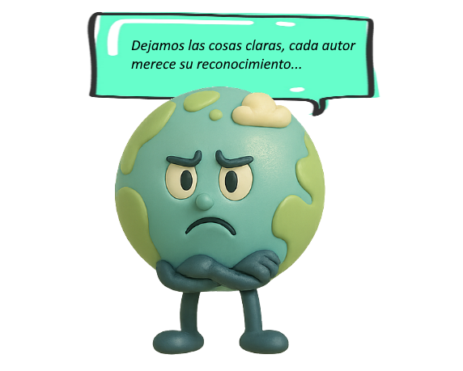

Sismos y volcanes
13- Fuentes - Licencia - Créditos
Fuentes
ECOLOGÍA VERDE, ¿Qué son los TERREMOTOS? - CAUSAS de los TERREMOTOS (2018) [video en línea] En: https://www.youtube.com/watch?v=yV93ViS8zP8&feature=emb_title
EL PAÍS, Fuerte TEMBLOR de 7,7 entre CUBA y JAMAICA (2020) [video en línea]. Recuperado de https://www.youtube.com/watch?v=T2WqVjeOpXo&feature=emb_title
GEOCONTACTO, "Estructura interna del planeta tierra". (2017). [video en línea]. Recuperado de https://www.youtube.com/watch?v=RTavhOhEX1I&feature=emb_title
INSTITUTO ANGELDELIA, Las placas tectónicas (2015) [video en línea]. Recuperado de https://www.youtube.com/watch?v=T2WqVjeOpXo&feature=emb_title
MAULUCIONI "Placas tectónicas mapa" (2012) [imagen en línea] en: https://es.wikipedia.org/wiki/Archivo:Placas_tectonicas_mapa.png
LMB DE WIKIPEDIA EN ESPAÑOL "Divergent border lmb.png", (2004) [imagen en línea] en: https://es.m.wikipedia.org/wiki/Archivo:Divergent_border_lmb.png
YEREMY KEMP "Earth-crust-cutaway-spanish.svg", (2004) [imagen en línea] en: https://es.m.wikipedia.org/wiki/Archivo:Earth-crust-cutaway-spanish.svg
History Latinoamérica "Krakatoa, uno de los volcanes más peligrosos del mundo - LA HISTORIA DE LA TIERRA", (2022). [video en línea]. Recuperado de https://www.youtube.com/watch?v=NfNEDGN7ONg
CNTV Infantil "Sismos | Planeta Darwin | Ciencias naturales", (2020). [video en línea]. Recuperado de https://www.youtube.com/watch?v=hj79z2fIWEs
T-Series Kids Hut - Cuentos en Español "DESASTRES NATURALES EL TERREMOTO | Nuevas historias infantiles | Nueva historia española para niños.", (2024). [video en línea]. Recuperado de https://www.youtube.com/watch?v=G1PkzYuuevU
CNTV Infantil "Tsunamis | Planeta Darwin | Ciencias naturales", (2020). [video en línea]. Recuperado de https://www.youtube.com/watch?v=EBTy3rLD56k
T-Series Kids Hut - Cuentos en Español "Desastres Naturales El Volcán | Nuevas Historias en Español para Niños | Las Mejores Historias", (2024). [video en línea]. Recuperado de https://www.youtube.com/watch?v=-5nZCBLL4-s
Personaje: imágenes generadas con asistencia de inteligencia artificial de ChatGPT (OpenAI), chatgpt.com, (2025). Generadas en: https://chatgpt.com/
Personaje e imágenes: generados con asistencia de inteligencia artificial de Copilot (Microsoft), (2025). Generadas en: https://copilot.microsoft.com/chats/
Viñeta de diálogo: pixabay, (2004). [imágenes en línea] en: https://pixabay.com/es/
Textos: parte de los textos incluidos en este material han sido generados con el apoyo del modelo de lenguaje Qwen (Alibaba Cloud), (2025) en: https://chat.qwen.ai/
CNTV Infantil "Sismos | Planeta Darwin | Ciencias naturales", (2020). [video en línea].
Recuperado de https://www.youtube.com/watch?v=hj79z2fIWEs
T-Series Kids Hut - Cuentos en Español "DESASTRES NATURALES EL TERREMOTO | Nuevas historias infantiles | Nueva historia española para niños.", (2024). [video en línea].
Recuperado de https://www.youtube.com/watch?v=G1PkzYuuevU
CNTV Infantil "Tsunamis | Planeta Darwin | Ciencias naturales", (2020). [video en línea].
Recuperado de https://www.youtube.com/watch?v=EBTy3rLD56k
T-Series Kids Hut - Cuentos en Español "Desastres Naturales El Volcán | Nuevas Historias en Español para Niños | Las Mejores Historias", (2024). [video en línea].
Recuperado de https://www.youtube.com/watch?v=-5nZCBLL4-s
Licencia

Créditos
Autora original: Elisa Mederos - Rediseño a cargo de: Juan Pablo Vuille
Recurso creado en el marco del Microtaller: "Recursos Educativos Abiertos | Laboratorio de Objetos de Aprendizaje". Postítulo "Innovación en las Prácticas con el uso de Recursos Educativos Abiertos", Plan Ceibal y Consejo de Formación en Educación (CFE) de la ANEP. (2020).
Rediseño elaborado en el marco del trabajo final de la materia "Materiales educativos digitales y Repositorios para su almacenamiento y recuperación" de la Universidad Nacional de La Plata (UNLP). (2025).
Los contenidos del presente recurso son de exclusiva responsabilidad del o los autores.
Obra publicada con Licencia Creative Commons Reconocimiento No comercial Compartir igual 4.0